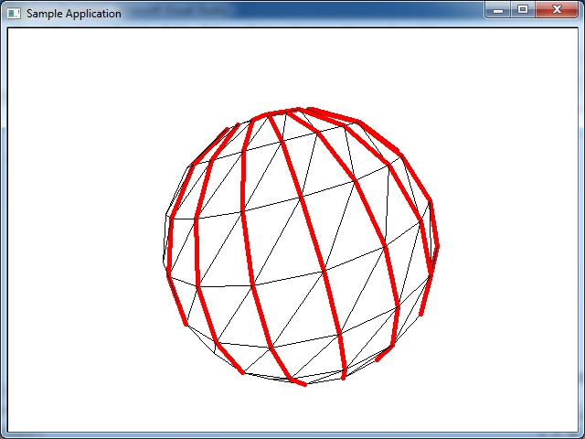
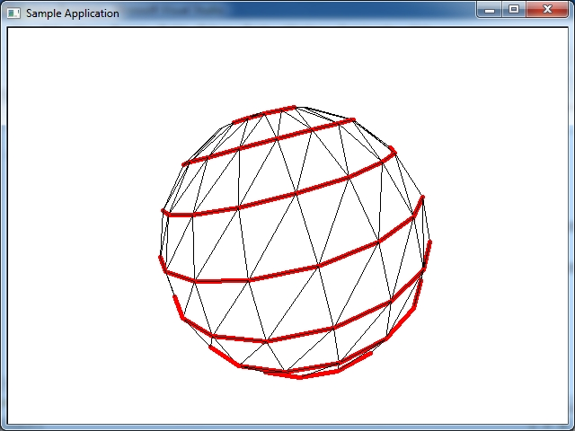
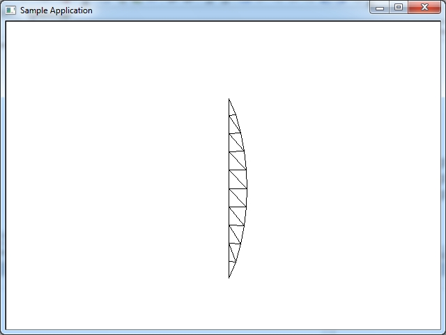
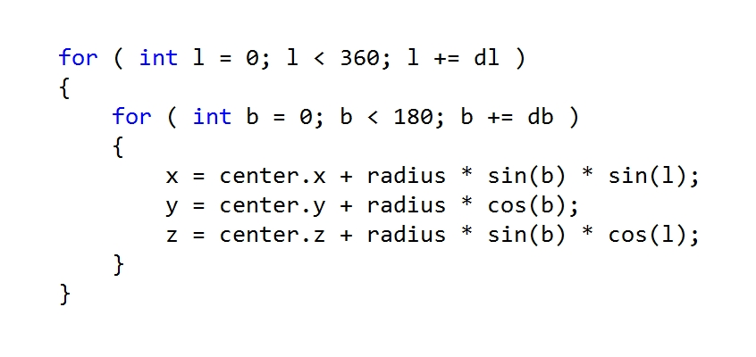
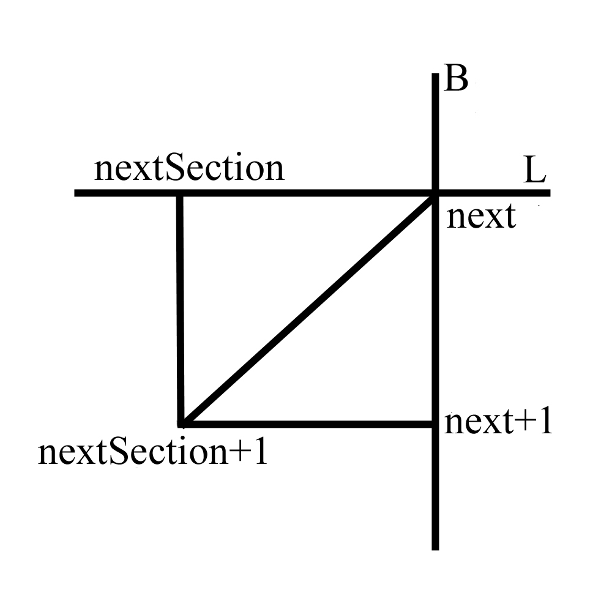
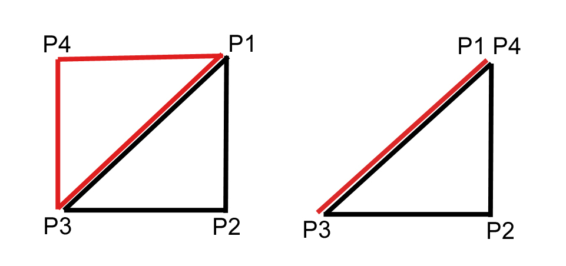

Параметрическое описание сферы так названо потому, что мы строим сферу используя два параметра- широту и долготу. В результате мы получаем меридианы и паралели. К примеру ось сферы проходит вдоль оси Y, и мы наложили на сферу текстуру земного шара. Координаты сферы проходящие от северного полюса к южному (и наоброт) этой сферы с текстурой- могут изменяться от -90 до +90 градусов, или от 0 до 180 градусов, и называються широтой, буква B. Координаты на сфере по окружности т.е. экватор нашей тестуры земного шара, могут меняться от -180 до +180 градусов или от 0 до 360 градусов, и называються долготой, буква L. Меридианы проходят от северного полюса к южному (и наоборот). Паралели прходят паралельно экватору этой сферы от северного полюса к южному (и наоборот).
Рисунке ниже красным цветом обозначены меридианы сферы - широта B.
Рисунке ниже красным цветом обозначены паралели сферы - долгота L.
Один slice сферы показан на рисунке ниже. Этот slice состоит из 10 stacks, и это 20 треугольников.
В математике имееться также еще формула не параметрического описания сферы. Из формулы параметрического описания сферы мы получаем в результате три координаты x,y,z которые и размещаем в пространстве. Потом эти вершины мы можем соединить линиями и получится проволочная модель сферы, или заполнить сферу текстурой. Формула параметрического описания сферы в общем случае выглядит так.

float PI2 = 2.0f * 3.14159265358979f;
float PI = 3.14159265358979f;
//цикл от 0 до 180 градусов широта
for(float b = 0.0f; b < PI; b += db)
{
//цикл от 0 до 360 градусов долгота
for(float l = 0.0f; l < PI2; l += dl)
{
//вычисляем координаты вершин
v[index].p.x = r * sinf(b) * sinf(l);
v[index].p.y = r * cosf(b);
v[index].p.z = r * sinf(b) * cosf(l);
//вычисляем нормали
v[index].n.x = sinf(b) * sinf(l);
v[index].n.y = cosf(b);
v[index].n.z = sinf(b) * cosf(l);
//вычисляем текстурные координаты
v[index].tu = l / PI2;
v[index].tv = b / PI;
}
}
Причем возможны видоизменения этой формулы. В одних случаях расчет координат сферы ведеться в цикле по количеству меридиан и паралелей, то есть сложить сферу в зависимости от количества полигонов которые нужны в результате- например 10 паралелей и 20 меридианов, в зависимости от апроксимации. В других случаях цикл расчета координат сферы построен на радианах- как в примере выше- обход цикла по радианам- от 0 до 180 градусов это широта, и от 0 до 360 градусов это долгота, от 0 до PI и от 0 до PI2. В некоторых книгах приводяться примеры, где цикл организован в виде градусов, а не радиан. Это не верное решение, делать цикл в градусах для расчета координат сферы, так или иначе градусы нужно преобразовывать в радианы для правильного результата. Например если вы пишете software rendering проект- создаете сферу на экране, то расчеты нужно проводить только в радианах.
Если вы построите сферу используя код выше, она будет расположена вертикально- то есть ось сферы будет проходить через ось Y координат- северный полюс сверху, южный снизу. Если использовать код выше, и поменять местами z,y то ось сферы будет расположена горизонтально. Если поменять местами z,x то поменяется место расположения шва сферы.
Если вы переставите значения x, y, z как в примере ниже- сфера будет иметь ось горизонтально расположенную, то есть южный полюс будет перед зрителем на экране, а с обратной противоположной стороны по горизонтали будет северный полюс.
//горизонтально расположенная сфера v[index].p.y = r * sinf(b) * sinf(l); v[index].p.z = r * cosf(b); v[index].p.x = r * sinf(b) * cosf(l);
Попробуйте самостоятельно написать программу вывода сферы, но рисовать на экране только один slice как на рисунке в начале статьи. Затем когда вы нарисовали один slice попробуйте поменять местами координаты x,z и z,y что бы самому посмотреть на результат- где будет находится шов сферы.
Текстурные координаты в примере выше имеют диапазон от 0.0 до 1.0. Поэтому мы делим долготу на PI2 и широту на PI что бы получить значение текстурных координат в этом диапазоне от 0.0 до 1.0.
Как понятно это был расчет вершин сферы, и текстурных координат. Этими значениями будет заполняться вершинный буфер перед выводом на экран. Но так же необходимо создать соответствующий буфер индексов, а потом выводить модель сферы на экран. Можно по разному организовать вершинный буфер, индексный буфер- есть несколько вариантов. Самый простой приводиться ниже. stacks это количество паралелей, slices это количество меридиан.
int stacks = 10;
int slices = 20;
int numVertices = slices * stacks * 4;
int numTriangles = slices * stacks * 2;
float thetaFac = (2.0f * 3.14159265358979f) / slices;
float phiFac = 3.14159265358979f / stacks;
float r = 15.0;
int index = 0;
for(int l = 0; l < slices; l++)
{
for(int b = 0; b < stacks; b++)
{
float sb = phiFac * b;
float sl = thetaFac * l;
v[index].p.x = r * sinf(sb) * sinf(sl);
v[index].p.y = r * cosf(sb);
v[index].p.z = r * sinf(sb) * cosf(sl);
v[index].tu = (float)l / (float)(slices);
v[index].tv = (float)b / (float)(stacks);
sb = phiFac * (b + 1);
sl = thetaFac * l;
v[index+1].p.x = r * sinf(sb) * sinf(sl);
v[index+1].p.y = r * cosf(sb);
v[index+1].p.z = r * sinf(sb) * cosf(sl);
v[index + 1].tu = (float)l / (float)(slices);
v[index + 1].tv = (float)(b + 1) / (float)(stacks);
sb = phiFac * (b + 1);
sl = thetaFac * (l + 1);
v[index+2].p.x = r * sinf(sb) * sinf(sl);
v[index+2].p.y = r * cosf(sb);
v[index+2].p.z = r * sinf(sb) * cosf(sl);
v[index + 2].tu = (float)(l + 1) / (float)(slices);
v[index + 2].tv = (float)(b + 1) / (float)(stacks);
sb = phiFac * b;
sl = thetaFac * (l + 1);
v[index+3].p.x = r * sinf(sb) * sinf(sl);
v[index+3].p.y = r * cosf(sb);
v[index+3].p.z = r * sinf(sb) * cosf(sl);
v[index + 3].tu = (float)(l + 1) / (float)(slices);
v[index + 3].tv = (float)b / (float)(stacks);
index+=4;
}
}
int baseIndex = 0;
int baseVert = 0;
while (baseVert < numVertices)
{
indices[baseIndex] = baseVert;
indices[baseIndex + 1] = baseVert+1;
indices[baseIndex + 2] = baseVert+2;
indices[baseIndex + 3] = baseVert;
indices[baseIndex + 4] = baseVert+2;
indices[baseIndex + 5] = baseVert+3;
baseIndex += 6;
baseVert += 4;
}
В данном примере r = 15.0 это радиус сферы, необходимый для расчета. 3.14159265358979f это значение Пи. Что бы не делать лишнее умножение на 2 можно взять 2 * Пи значение 6.28318530717958f.
Еще один вариант заполнения буфера индексов.
int nVertCount;
int nTriangleCount;
struct vertex {
float x,y,z;
};
vertex *vert_buff;
unsigned int *index_buff;
void Init_Sphere()
{
int slices = 20;
int stacks = 10;
float thetaFac = (2.0f * 3.1415926f) / slices;
float phiFac = 3.1415926f / stacks;
float radius = 8.0f;
nVertCount = (slices + 1) * (stacks + 1);
nTriangleCount = slices * stacks * 2;
vert_buff = new vertex[nVertCount];
int index = 0;
for ( int l = 0; l <= slices; l++ )
{
for ( int b = 0; b <= stacks; b++ )
{
vert_buff[index].x = radius * sinf(phiFac * b) * sinf(thetaFac * l);
vert_buff[index].y = radius * cosf(phiFac * b);
vert_buff[index].z = radius * sinf(phiFac * b) * cosf(thetaFac * l);
index++;
}
}
index_buff = new unsigned int[nTriangleCount * 3];
index = 0;
for ( int l = 0; l < slices; l++ )
{
for ( int b = 0; b < stacks; b++ )
{
int next = l * (stacks + 1) + b;
int nextSection = (l + 1) * (stacks + 1) + b;
index_buff[index] = next;
index_buff[index + 1] = next + 1;
index_buff[index + 2] = nextSection + 1;
index_buff[index + 3] = next;
index_buff[index + 4] = nextSection + 1;
index_buff[index + 5] = nextSection;
index += 6;
}
}
}

Если хотите добится эффекта как на видео ниже, смените код программы как показано в примере.
void CMeshManager::DrawSphere (HWND hwnd)
{
Clear_Backbuffer();
static UINT nTriCount = 1;
if( nTriCount < nTriangleCount)
nTriCount ++;
for (UINT i = 0; i < nTriCount; i++)
{
В каком порядке происходит добавление вершин в буфер индексов - b (по высоте) добавляется сверху вниз от 0 до 180 градусов, l (по горизонтали) добавляется справа- налево от 0 до 360 градусов поэтому во втором примере текстурные координаты перевернуты по горизонтали. В нормальном виде тестурные координаты идут слева направо по горизонтали. Причем шев сферы идет прямо противоположно с тыльный стороны зрителя (и вершины создаются справа налево если смотреть на сферу сбоку, и по часовой стрелке если смотреть на сферу сверху).
Если вы построите сферу используя код выше, она будет создаваться по slices справа налево, но можно поменять местами в цикле переменные b,l и тогда сфера будет создаватся по stacks - сверху вниз. В примере кода ниже в цикле местами поменяли значения b,l.
int slices = 20;
int stacks = 10;
float thetaFac = (2.0f * 3.1415926f) / slices;
float phiFac = 3.1415926f / stacks;
float radius = 8.0f;
UINT nVertCount = (slices + 1) * (stacks + 1);
UINT nTriangleCount = slices * stacks * 2;
vertex3 *vert_buff = new vertex3[nVertCount];
int index = 0;
for ( int b = 0; b <= stacks; b++ )
{
for ( int l = 0; l <= slices; l++ )
{
vert_buff[index].v.x = radius * sinf(phiFac * b) * sinf(thetaFac * l);
vert_buff[index].v.y = radius * cosf(phiFac * b);
vert_buff[index].v.z = radius * sinf(phiFac * b) * cosf(thetaFac * l);
vert_buff[index].t.x = 1.0f - ((float)l / (float) slices);
vert_buff[index].t.y = (float)b / (float) stacks;
index++;
}
}
m_nNumIndices = nTriangleCount * 3;
WORD *index_buff = new WORD[m_nNumIndices];
index = 0;
for ( int b = 0; b < stacks; b++ )
{
for ( int l = 0; l < slices; l++ )
{
int next = b * (slices + 1) + l;
int nextSection = (b + 1) * (slices + 1) + l;
index_buff[index] = next;
index_buff[index + 1] = nextSection;
index_buff[index + 2] = nextSection + 1;
index_buff[index + 3] = next;
index_buff[index + 4] = nextSection + 1;
index_buff[index + 5] = next + 1;
index += 6;
}
}
Видео ниже отображает порядок создания треугольников, в случае когда b и l поменяли местами.
Откуда у сферы берутся "вырожденные" треугольники показано на рисунке ниже.
Слева на рисунке два треугольника в обычном состоянии. Справа на рисунке точки P1 и P4 находятся на полюсе сферы - в одной точке, поэтому другой треугольник в "вырожденном" состоянии.